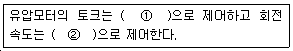
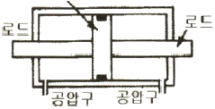
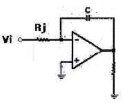
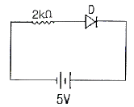
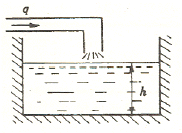
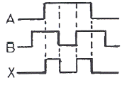
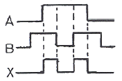

기계정비산업기사 (2006-03-05 기출문제)
1과목: 공유압 및 자동화시스템
1. 유압기계에서 사용되는 다음의 밸브가 뜻하는 용어 중 거리가 먼 것은?
- 4포트
- 오픈 센터
- 가스켓
- 3위치
(정답률: 91%)

2. 유체 동력학에 대한 설명 중 옳은 것은?
- 유체의 속도는 단면적이 큰 곳에서는 빠르다.
- 점성이 없는 비압축성의 액체가 수평 관을 흐를 때 압력수두+위치수두+속도수두=일정하다.
- 유속이 크고 굵은 관을 통과할 때 층류가 발생한다.
- 유속이 작고 가는 관을 통과할 때 난류가 발생한다.
(정답률: 66%)
3. 공압 시스템에서 저장탱크내의 공기의 적정온도는 몇 ℃인가?
- –10~0
- 10~20
- 40~50
- 90~100
(정답률: 60%)
4. 압력제어밸브는 유압시스템의 전체 혹은 일부의 압력을 제어한다. 다음 중 압력 릴리프밸브의 사용목적에 따른 밸브의 명칭이 아닌 것은?
- 카운터 밸런스 밸브
- 브레이크 밸브
- 로딩밸브
- 시퀀스 밸브
(정답률: 50%)
5. 내경 32mm의 실린더가 10mm/sec 의 속도로 움직이려 할 때 필요한 최소 펌프의 토출량은 몇 ℓ/min인가 ?
- 0.5
- 1
- 1.5
- 2
(정답률: 35%)
6. 기능을 나타내는 기호와 용도가 옳게 연결된 것은?
- ▷:유압
- ▶:공압
- M : 스프링
- ≍: 교축
(정답률: 78%)
7. 유압 펌프에서 강제식 펌프의 장점이 아닌 것은?
- 비 강제식에 비해 크기가 대형이며 체적효율이 좋다..
- 높은 압력(70 bar 이상)을 낼 수 있다.
- 작동 조건의 변화에도 효율의 변화가 적다.
- 압력 및 유량의 변화에도 원활하게 작동한다.
(정답률: 38%)
8. 다음 ( ) 안의 ①,②의 내용으로 적절한 것은?

- ①방향, ②유량
- ①압력, ②유량
- ①유량, ②압력
- ①유량, ②볼트
(정답률: 70%)
9. 압축기는 변동하는 공기의 수요에 공급량을 맞추기 위해 적절한 조절방식에 의해 제어된다. 다음 중 무부하 조절방식이 아닌 것은?
- 배기 조절방식
- 흡입량 조절방식
- 차단 조절방식
- 그립-암 조절방식
(정답률: 32%)
10. 다음 중 작동유 구비조건으로 맞는 것은?
- 압축성일 것
- 녹이나 부식의 발생을 촉진시킬 것
- 적당한 유막 강도를 가질 것
- 휘발성이 좋을 것
(정답률: 66%)
11. 물체에 직접 접촉하지 않고 그 위치를 검출하여 전기적 신호를 발생하는 장치는 ?
- 리드스위치
- 인터랩터
- 바이메탈
- 리밋스위치
(정답률: 55%)
12. 다음그림과 같은 공기압 실린더의 올바른 명칭은?

- 단동 실린더
- 편로드 복동실린더
- 양로드 복동실린더
- 탠덤 실린더
(정답률: 85%)
13. PLC 프로그램에서 카운터의 출력은 어떻게 OFF 시키는가 ?
- 카운터의 계수치가 같아지면 OFF된다.
- 카운터의 리셋 입력을 ON 으로 한다.
- 카운터의 계수입력을 설정시간 동안 ON으로 한다.
- 카운터의 계수입력을 설정시간 동안 OFF로 한다.
(정답률: 48%)
14. 자동화를 함으로써 기대되는 효과가 아닌 것은?
- 유연성을 증대시킨다.
- 생산성을 향상시킨다.
- 신뢰성을 향상시킨다 .
- 품질을 고급화한다.
(정답률: 66%)
15. 제어정보 표시 형태에 의한 분류 중 해당되지 않는 것은?
- 아날로그 제어계
- 디지탈 제어계
- 2 진 제어계
- 1O 진 제어계
(정답률: 53%)
16. 공압 시퀸스 제어 회로를 구성할 때 사용되는 모둘의 구성 요소가 아닌 것은?
- OR 밸브
- 타이머
- 메모리 밸브
- 3/2 -Way 밸브
(정답률: 43%)
17. 자동화 기기는 센서, 제어 장치, 액츄에이터 등의 전원선 입력선, 출력선을 경유하여 들어오는 전기적 잡음에 대하여 대책을 세워야 한다. 다음 설명 중 틀린 것은?
- 기계적 접점의 개폐에 의한 전기적 잡음인 경우는 부하 혹은 기계적 접점과 병렬로 다이오드 혹은 RC 회로를 부가한다.
- 전원으로부터 유입되는 전기적 노이즈 필터를 사용하여 제거한다.
- 낙뢰에 의해 인가되는 서지 (surge) 전압은 산화아연바리스터나 피뢰관을 사용하여 기기를 보호한다.
- 정전기에 의한 전기적 잡음은 케이블을 모두 차폐선으로 교체하여 제거한다.
(정답률: 50%)
18. 미끄럼 밀봉이 필요 없으며 단지 재료가 늘어나는 것에 따라 생기는 마찰이 있을 뿐인 실린더로 클램핑 실린더라고도 하는 것은?
- 탠덤 실린더
- 격판 실린더
- 피스톤 실린더
- 벨로즈 실린더
(정답률: 39%)
19. 220V, 2 병렬 Δ결선 전동기를 직렬 Y 결선으로 바꿀 때 전동기에 인가하여야 할 전원 전압은?
- 380
- 440
- 620
- 760
(정답률: 19%)
20. 다음 중 광센서로 사용되는 것만으로 나열한 것은?
- 열전쌍, 초전 센서
- 포토커플러, 조도센서 (CdS)
- 포텐쇼미터 차동 트랜스
- 초음파 센서 파이로 센서
(정답률: 71%)
2과목: 설비진단관리 및 기계정비
21. 다음은 상비품 보전자재에 대한 발주 방식을 설명한 것이다. 맞는 것은?
- 사용하면 사용한 만큼 즉시 보충하는 방식은 정량 발주 방식이다 .
- 발주시기는 일정하고 소비의 실적 및 예상 변화에 따라 발주수량을 바꾸는 방식은 사용고발주방식이다.
- 발주량을 항상 일정하게 하는 방식은 정기발주방식이다.
- 재고량이 항상 일정한 방식은 사용고발주방식이다.
(정답률: 43%)
22. 진동 방지재 중 실리콘 합성고무의 가장 큰 약점은?
- 값이 비싸다.
- 시간에 따라 강성이 변한다.
- 무게가 무겁다.
- 미끄럽다.
(정답률: 59%)
23. 다음 중 진동 방지의 방법으로 옳지 않은 것은?
- 외부 진동으로부터의 보호
- 진동전달 경로차단
- 진동발생 설비의 자동화
- 진동원에서의 진동제어
(정답률: 71%)
24. 윤활유롤 선정할 때 가장 기본적이고 먼저 검토해야 할 사항은?
- 적정점도
- 운전속도
- 급유방법
- 관리방법
(정답률: 67%)
25. 다음 진동현상과 특징 중 저주파에서 발생하는 주요한 이상 현상이 아닌 것은?
- 언밸런스
- 케비테이션
- 미스얼라이먼트
- 풀림
(정답률: 60%)
26. 소리(음)가 서로 다른 매질을 통과할 때 구부러지는 현상은?
- 음의 반사
- 음의 간섭
- 음의 굴절
- Masking 효과
(정답률: 75%)
27. 설비의 목적에 따른 분류에서 부대설비로서 배관설비, 발전설비, 수처리 시설 등과 같은 설비란 무엇인가 ?
- 생산설비
- .관리설비
- 유틸리티설비
- 공장설비
(정답률: 62%)
28. 진동을 표시할 때 log 눈금을 주로 사용하는데, 이러한 로그 눈금상의 크기를 비교하여 표시한 데시밸(dB) 산출 공식은 무엇인가 ? (단:a:측정치, aref:참고치)
- 20 loglO(a/aref)
- 20 loglO(aref/a)
- 10 loglO(a/aref)
- 10 loglO(aref/a)
(정답률: 37%)
29. 설비열화를 방지하기 위한 대책으로 잘못된 것은?
- 열화방지
- 열화측정
- 열화회복
- 열화개선
(정답률: 30%)
30. 등청감곡선 (equral loudness contours) 이란 ?
- 음의 물리적 강약을 음압에 따라 표시한 곡선
- 사람이 귀로 듣는 같은 크기의 음압을 주파수별로 구하여 작성한 곡선.
- 정상청력을 가진 사람이 1000Hz 에서 들을수 있는 최소 음압의 실효치.
- 음의 진행방향에 수직하는 음에너지
(정답률: 63%)
31. 외력이나 외부 토크가 연속적으로 가해짐으로써 생기는 진동을 무엇이라 하는가?
- 강제진동
- 자유진동
- 고유진동
- 공진
(정답률: 68%)
32. 정비계획 수립 시 검토할 사항이 아닌 것은?
- 생산계획을 파악하고 증산체제 시 정비계획을 무기한 연기한다.
- 설비의 능력을 파악한다.
- 수리형태를 파악하고 점검계획을 세운다.
- 수리요원의 능력과 인원을 검토하여 정비계획을 수립하고 필요시 외주업자를 이용한다.
(정답률: 75%)
33. 보전비를 들여서 설비를 만족한 상태로 유지하여 막을 수 있었던 생산상의 손실을 기회손실이라 하는데, 다음 중 기회 손실에 해당하지 않는 것은?
- 휴지손실
- 준비손실
- 회복손실
- 재고손실
(정답률: 58%)
34. 설비보전 내용을 기록하였을 때의 장점이 아닌 것은?
- 설비 수리주기의 예측이 가능하다.
- 설비수리비용의 예측 및 판단자료가 된다.
- 설비에서 생산되는 생산량을 파악할 수 있다.
- 설비 갱신 분석의 자료로 활용할 수 있다.
(정답률: 68%)
35. 공진 (resonance) 에 관한 설명으로 적합한 것은?
- 진동 파형의 순간적인 위치 및 시간의 지연
- 고유진동수와 강제진동수가 일치할 때 진폭이 증가하는 현상
- 연결된 두 개의 축 중심이 일치하지 않을 때 발생하는 진동
- 수직과 수평 방향으로 동시에 발생하는 진동
(정답률: 66%)
36. 사람이 가청할 수 있는 최소 가청음의 세기는 얼마인가? (단, W/m2=음향출력/표면적)
- 10-12(W/m2)
- 20-12(W/m2)
- 100-12(W/m2)
- 200-12(W/m2)
(정답률: 62%)
37. 설비보전의 효과로서 적합하지 않은 것은?
- 설비불량으로 인한 제작 불량이 적어진다.
- 예비설비가 줄어들어 투자비용이 절감된다.
- 고장으로 인한 납기지연이 적어진다.
- 가동율이 향상되나 보전비가 증가한다.
(정답률: 57%)
38. 그리스를 장기간 저장 또는 사용중에 기름이 분리되는 현상을 무엇이라고 하는가?
- 혼화 안정도
- 이유도
- 산화 안정도
- 주도
(정답률: 55%)
39. 순간순간의 신호레벨을 서로 더해 측정시간 으로 나눈 값은?
- 실효값
- 편진폭값
- 양진폭값
- 평균값
(정답률: 46%)
40. 기계진동의 가장 일반적인 원인으로서 진동 특성이 1f 성분이 탁월한 회전기계의 열화 원인은? (단, f = 회전주파수)
- 언밸런스(unbalance)
- 기계적풀림(looseness)
- 공진(resonance)
- 미스얼라인먼트 (misalignment)
(정답률: 62%)
3과목: 공업계측 및 전기전자제어
41. 다음 중 강자성체에 속하는 것은?
- C
- Zn
- Pb
- Ni
(정답률: 43%)
42. 그림의 회로는 타이밍 회로나 A/D변환기에 많이 사용되고 있다. 이 회로의 명칭은?

- 가산기
- 감산기
- 미분기
- 적분기
(정답률: 32%)
43. 전압계의 측정범위를 넓히기 위해 전압계에 직렬로 저항을 접속하는데 이 저항을 무엇이라고 하는가?
- 미소저항
- 가변저항
- 배율기
- 분류기
(정답률: 51%)
44. 그림과 같은 회로에서 SI 다이오드의 양단에 걸리는 전압 몇 [V] 인가 ?

- 0
- 1
- 3
- 5
(정답률: 45%)
45. 도체에 변형을 가하면 길이와 단면적의 변화에 의해 저항률이 바뀌는 원리를 이용하여 압력센서로 사용되는 것은?
- 홀 센서
- 서미스터
- 리드스위치
- 스트레인게이지
(정답률: 61%)
46. 시퀀스 제어기기에서 문자기호 CB 는 무엇을 뜻하는가 ?
- 차단기
- 전자 개폐기
- 기름 차단기
- 공기 차단기
(정답률: 39%)
47. 다음의 논리식 중 옳지 않은 것은?
- A+A=A
- AㆍA=A
- A+
 =1
=1 - Aㆍ
 =1
=1
(정답률: 60%)
48. 액위 측정장치로서 원리와 구조가 간단하며 고온 및 고압에도 사용활 수 있어 공업용으로 많이 쓰이는 직접식 액위계는 어느 것인가?
- 직시식 액위계
- 초음파식 액위계
- 기포식 액위계
- 폴로트식 액위계
(정답률: 54%)
49. 차압 검출 기구에 속하지 않는 것은?
- 오리피스(orifice)
- 노즐(nozzle)
- 벤츄리관(ventur i tube)
- 자이로스코프(gyroscope)
(정답률: 44%)
50. 신호전송의 노이즈 대책의 방법 중 정전유도의 제거에 효과가 있는 것은?
- 필터사용
- 연선사용
- 관로사용
- 실드선사용
(정답률: 63%)
51. 제어요소는 무엇으로 구성 되는가?
- 검출부와 조작부
- 조절부와 조작부
- 검출부와 조절부
- 비교부와 검출부
(정답률: 69%)
52. 정의에 따라서 결정된 양을 사용하여 기본량만의 측정으로 유도하는 측정방법은?
- 직접측정
- 간접측정
- 비교측정
- 절대측정
(정답률: 47%)
53. 그림과 같은 액면계에서 q(t) 를 입력 h(t)를 출력으로 했을 때 전달 함수는?

- K S
- K/S
- K/ 1+S
- 1 + KS
(정답률: 37%)
54. 제어 지령용 주요기기가 아닌 것은?
- 누름버튼 스위치
- 캡 스위치
- 마이크로 스위치
- 리밋 스위치
(정답률: 34%)
55. 정격 주파수가 60[Hz], 6극의 3상 유도전동기에서 전부 하시 회전수가 1140[r pm]이면 이때의 슬립은?
- 0.⑤
- 0.⑤5
- 0.07
- 3
(정답률: 43%)
56. 제어밸브의 구동원으로 공기압 사용되는 이유 중 적당하지 않은 것은?
- 구조가 간단하고 고장이 적다.
- 방폭성이 있어 취급이 용이하다.
- 압축성이 있어 원거리 전송에 알맞다.
- 유압 , 전기 요소에 비해 값이 싸다.
(정답률: 61%)
57. 전기자 도체에 전류는 전기자 도체가 브러시를 통과할 때 마다 반대방향으로 바뀐다. 이러한 전기자 권선의 교류 기 전력을 직류 기전력으로 변환하는 것을 무엇이라 하는가?
- 정류
- 교번
- 점호
- 섬락
(정답률: 60%)
58. 다음 프로세스 제어 시스템에서 일반적으로 사용되는 신호가 아닌 것은?
- .0 ~ 10(V) DC 의 전압신호
- 1 ~ 5(V) DC 의 전압신호
- 4 ~ 20(mA) DC의 전류신호
- 2 ~ 5.0(kg/cm2)의 공기압신호
(정답률: 35%)
59. A 와 B 가 입력되고 X 가 출력일 때 다음 그림과 같이 타임차트 (time chart) 가 그려졌다면 어느 회로인가?

- AND 회로
- OR 회로
- Exclusive-OR 회로
- FIip-Flop 회로
(정답률: 72%)
60. 공기식 조작부에 널리 사용되는 공기압은 얼마인가?

- 4 ~ 20[ kg f/cm2 ]
- 0.4 ~ 5.0[kgf/cm2]
- 0.2 – 1.0[ kgf/cm2]
- 0.01-0.1[kgf/cm2]
(정답률: 59%)
4과목: 기계정비 일반
61. 산업현장에서 고무제품 등을 손쉽게 접착하는데 이용되는 순간접착제에 대한 것으로 맞는 것은?
- 감압형 접착제
- 중합제형 접착제
- 유화액형 접착제
- 열 용융형 접착제
(정답률: 30%)
62. 진동이 있는 차량, 항공기, 동력기 등의 풀림방지를 위해 사용되는 접착제는?
- 유화액형 접착제
- 열용융형 접착제
- 혐기성 접착제
- 감압형 접착제
(정답률: 40%)
63. 베어링의 열받음에 의한 방법에서 몇 도 이상 가열하면 경도 저하가 일어나는가?
- 100 ℃
- 130 ℃
- 140 ℃
- 150 ℃
(정답률: 67%)
64. 압력이 포화수증기압 이하로 낮아지면서 기포가 발생하는 현상을 무엇이라 하는가?
- 캐비테이션
- 수격현상
- 채터링현상
- 교축현상
(정답률: 68%)
65. 송풍기 축의 센터링을 검사할 때 사용되지 않는 것은?
- 센터 게이지
- 틈새 게이지
- 다이얼 게이지
- 테이퍼 게이지
(정답률: 34%)
66. 구멍의 치수가 측의 치수보다 작을 때의 끼워맞춤을 무엇이라 하는가?
- 억지 끼워맞춤
- 중간 끼워맞춤
- 헐거운 끼워맞춤
- 가열 끼워맞춤
(정답률: 75%)
67. 다음 중 원심펌프는 ?
- 기어 펌프
- 플런저 펌프
- 벌류트 펌프
- 다이어프램 펌프
(정답률: 50%)
68. 제품에 주어진 허용차중 최대허용치수와 최소허용치수 두 허용한계치수를 정하여 통과와 정지의 두 가지 만으로 합격 불합격을 판정하는 측정기는?
- 측장기
- 미니미터
- 한계게이지
- 앤빌교환식 마이크로미터
(정답률: 48%)
69. 다음 측정기 중 비교측정기에 속하는 것은?
- 버니어캘리퍼스
- 마이크로미터
- 다이얼 게이지
- 각도자
(정답률: 58%)
70. 송풍기 (blower)의 주요 구성부분이 아닌 것은?
- 케이싱
- 압축기
- 임펠러
- 축 베어링
(정답률: 40%)
71. 접착제에 대한 설명 중 맞지 않는 것은?
- 고체표면의 좁은 틈새에 침투하여 모세관 작용을 할 것
- 액상의 접합제가 도포 후 용매의 증발 냉각 또는 화학반응에 의해 고체화하여 일정한 강도를 가질 것
- 고체성일 것
- 용매 또는 분산매의 증발에 의하여 경화되는 접착제를 유화액형 접착제라 함
(정답률: 57%)
72. 나사이음 또는 용접 등 방법으로 부착하고 관경이 비교적 클 경우 내압이 높을 경우 사용되는 관 이음쇠는?
- 주철관 이음쇠
- 유니온 이음쇠
- 플랜지 이음쇠
- 신축 이음쇠
(정답률: 57%)
73. 밸브에 대한 설명 중 옳지 않은 것은?
- 밸브의 크기는 호칭경으로 나타내며 강관이나 이음쇠의 호칭경 치수와 일치한다.
- 호칭경을 mm 로 나타낸 것을 A열, 인치단위로 나타낸 것을 B열이라고 한다.
- 관과의 접속끝이나 밸브시이트부의 유로경을 구경이라고 한다.
- 대형, 고압, 선박용 밸브는 호칭경보다 구경을 약간 크게 한다.
(정답률: 53%)
74. 유체의 유량, 흐름의 단속, 방향전환, 압력 등을 조절할때 사용하는 밸브의 종류가 아닌 것은?
- 스톱밸브
- 슬루스밸브
- 안전밸브
- 집류밸브
(정답률: 49%)
75. 토출 앙정을 높이기 위해 사용하는 펌프는?
- 단단펌프
- 다단 펌프
- 양흡입 펌프
- 추력 펌프
(정답률: 38%)
76. 키이를 조립하였을 경우 축과 보스가 가볍게 이동할 수 있는 키는?
- 묻힘 키이
- 접선 키이
- 반달 키이
- 슬라이딩 키이
(정답률: 66%)
77. 기어 조립 후 운전 초기에 발생하는 현상은?
- 백레시
- 스코어링
- 피치선
- 인벨루트
(정답률: 39%)
78. 원심식 압축기의 장점으로 옳지 않은 것은?
- 설치 면적이 비교적 좁다.
- 기초가 견고하지 않아도 된다
- 압력 맥동이 없다.
- 고압 발생이 용이하다.
(정답률: 36%)
79. 펌프의 동력이 급차단, 급기동 시에 관내부의 압력이 상승 또는 하강하는 현상은?
- 케비테이션(cavitation)
- 수격현상(water hammer)
- 서징(surging)
- 부식(corrosion)
(정답률: 69%)
80. 펌프 축에 설치된 베어링의 이상 현상이 아닌 것은?
- 윤활유 부족
- 축 중심의 일치
- 베어링 장치 불량
- 축 추력의 발생
(정답률: 69%)
- 4포트: 유압기계에서 사용되는 밸브 중 하나로, 4개의 포트가 있는 밸브를 뜻합니다. 이 포트는 유압 유체의 유입과 배출을 제어하는 역할을 합니다.
- 오픈 센터: 유압기계에서 사용되는 밸브 중 하나로, 중앙 위치에서 유압 유체가 자유롭게 흐를 수 있는 밸브를 뜻합니다. 이 밸브는 유압 유체의 유입과 배출을 제어하는 역할을 합니다.
- 3위치: 유압기계에서 사용되는 밸브 중 하나로, 3개의 위치를 가지고 있는 밸브를 뜻합니다. 이 밸브는 유압 유체의 유입과 배출을 제어하는 역할을 합니다.
가스켓은 밸브나 파이프 등의 연결 부위에서 유체 누출을 방지하기 위해 사용되는 밀봉재입니다. 따라서, 다른 세 가지 용어와는 거리가 먼 개념입니다.